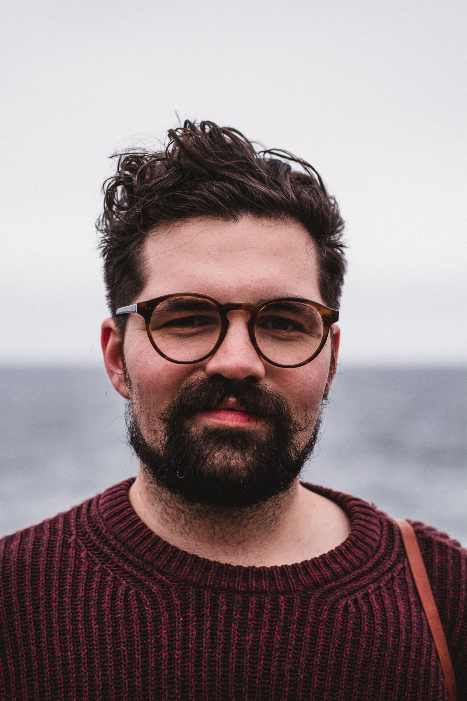

Steve Dylan

About
Steve Simkins began his photography journey in 2015 with a Canon AE-1 film camera, a box of developing gear, and an eye for beauty in the details. By 2018 he had started his own business shooting weddings and engagements for a variety of clients, while still finding time to work on personal projects. He took a sabbatical from professional work in 2019 and continues to focus on building a body of work documenting the details of the everyday. He lives in Virginia, his lifelong home, with his wife Madison, their son Theo, and four uniquely demanding cats.